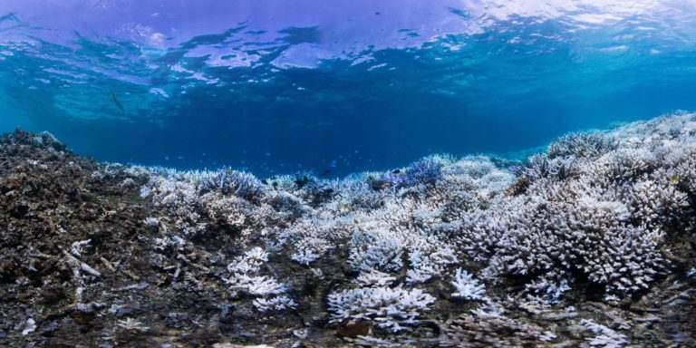

Кораллы Окинавы
Изменения глобального климата и загрязнение вод Мирового океана губительно сказываются на уникальных экосистемах кораллов. Свидетельством тому служат фотографии коралловых рифов вокруг японского острова Окинава. Они были получены в рамках исследовательской программы XL Catlin Seaview. Снимки наглядно демонстрируют разрушительное воздействие, оказываемое на кораллы потеплением воды.

Детальные причины и механизмы этого явления неизвестны. Биологи отмечают, что стремительное обесцвечивание кораллов уже охватило рифы Тихого, Индийского и Атлантического океанов. В общей сложности уже повреждены 93% кораллов мира, ежегодно гибнут десятки тысяч квадратных километров рифов, а через пару десятилетий великолепный Большой Барьерный риф исчезнет полностью.